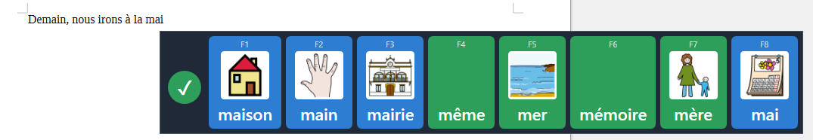
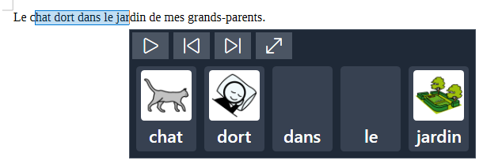
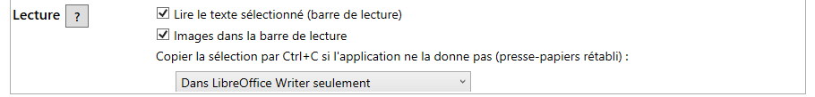

Pépite dans LibreOffice Writer
Nouveau dans Pépite 0.11.0 : dans LibreOffice Writer, Pépite fonctionne comme dans Word. La barre de mots suit le curseur, les mots mal écrits sont remplacés, et un texte sélectionné est lu à voix haute, sans toucher au presse-papiers.
Page publiée le . Pépite 0.11.0 est une version de test (bêta) : dites-nous ce qui ne va pas.
Beaucoup d'écoles et de familles utilisent LibreOffice, gratuit et libre. Jusqu'ici, Pépite y voyait seulement les touches tapées : il ne pouvait ni lire le texte, ni savoir où était le curseur. Depuis la version 0.11.0, il lit le texte de Writer par l'accessibilité de Windows, comme le ferait un lecteur d'écran. Rien à installer ni à régler : il faut LibreOffice 25.2 ou plus récent.
Pendant que l'élève écrit
- La barre est juste sous la ligne que l'élève tape, même après un retour à la ligne : plus besoin de la chercher près de la souris.
- L'élève clique au milieu d'un mot, puis choisit un mot dans la barre : le mot entier est remplacé, sans lettre en trop.
- Les corrections remplacent les mots mal écrits, comme dans Word : un mot choisi avec le rond ≈ (
la maizon
→la maison
), les mots collés (ilya
→il y a
) et le rond ne (il veut pas
→il ne veut pas
). - Quand l'élève modifie une phrase, Pépite lui relit le mot ou la phrase changés, même quand la correction automatique de LibreOffice est passée avant.
- Devant ! ? : ;, c'est LibreOffice qui met l'espace, comme d'habitude : Pépite n'en ajoute pas une seconde. S'il n'en met pas (dans un paragraphe en anglais, par exemple), Pépite ajoute la sienne.

Pictogrammes : Sergio Palao, ARASAAC, Gouvernement d'Aragon, CC BY-NC-SA 4.0
Lire un texte sélectionné
L'élève sélectionne un texte : à la souris, par un double-clic sur un mot, un triple clic sur une phrase, avec Maj + les flèches, ou tout le document avec Ctrl+A. La barre de lecture apparaît, avec les mots sélectionnés ; le bouton ▶ les lit à voix haute. Une sélection sur plusieurs paragraphes est lue en entier.
- Pépite lit la sélection directement, sans rien copier : le presse-papiers n'est pas touché. Ce que l'élève avait copié avant est toujours là pour Ctrl+V.
- Un mot coupé par la sélection à la souris est lu en entier : l'élève qui sélectionne de
…hat
àjar…
entendchat … jardin
.

Pictogrammes : Sergio Palao, ARASAAC, Gouvernement d'Aragon, CC BY-NC-SA 4.0
La barre de lecture est expliquée dans l'aide : Lire un texte, bon à savoir.
Le réglage « Copier la sélection »
Si la lecture directe échoue (une très vieille version de LibreOffice, par exemple), Pépite peut encore copier la sélection, comme Ctrl+C, puis remettre le presse-papiers comme avant. C'est le réglage « Copier la sélection par Ctrl+C si l'application ne la donne pas », dans Réglages → onglet « Barre et voix », partie Lecture. Trois choix :
- Dans LibreOffice Writer seulement (au départ) : dans Writer, la copie sert seulement quand la lecture directe échoue ;
- Partout : aussi dans les autres programmes qui ne donnent pas leur sélection ;
- Jamais : Pépite ne copie jamais rien. Dans Writer, la lecture directe marche quand même.

Dans LibreOffice Calc, Pépite ne copie jamais, même avec Partout : la feuille de calcul n'est jamais modifiée. Le détail du réglage est dans l'aide : les réglages, Lecture.
La fenêtre du mot de passe
Quand un document est protégé, LibreOffice ouvre la fenêtre Saisir le mot de passe
. Depuis la version 0.11.0, Pépite n'y montre rien, n'y lit rien et n'en garde aucune trace, même dans le journal de diagnostic. Jusqu'à la version 0.10.2, les lettres tapées dans cette fenêtre pouvaient apparaître dans la barre, et dans le journal de diagnostic quand il était activé. Comme partout : les mots de passe.
Les limites
- Calc et Impress : Pépite suit seulement les touches tapées. La barre propose des mots, mais Pépite ne peut pas lire le texte : il écrit la fin du mot, sans remplacer le début, et il n'y a pas de rond ne.
- Dans les fenêtres de LibreOffice (Enregistrer sous, Rechercher…), la barre ne s'affiche pas.
- Si LibreOffice reste bloqué un moment (par exemple à la première ouverture de
Enregistrer sous
), Pépite suit seulement les touches quelques secondes, puis relit le texte comme avant. - Pour un très long document sélectionné en entier (une centaine de pages), la lecture directe ne suffit pas : Pépite copie alors la sélection, si le réglage le permet. Avec Jamais, il peut n'en lire qu'une partie, ou rien.
- Pépite a été vérifié avec LibreOffice 25.2 et plus récent. Avec une version plus ancienne, il peut ne suivre que les touches.